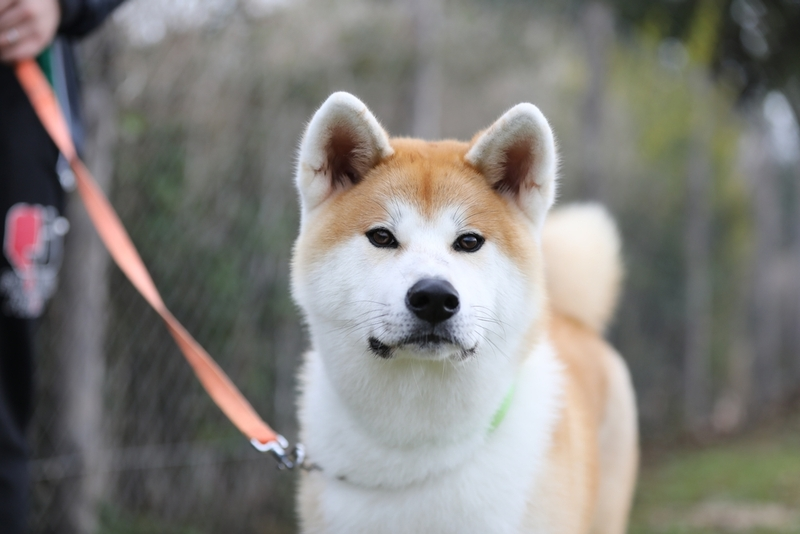
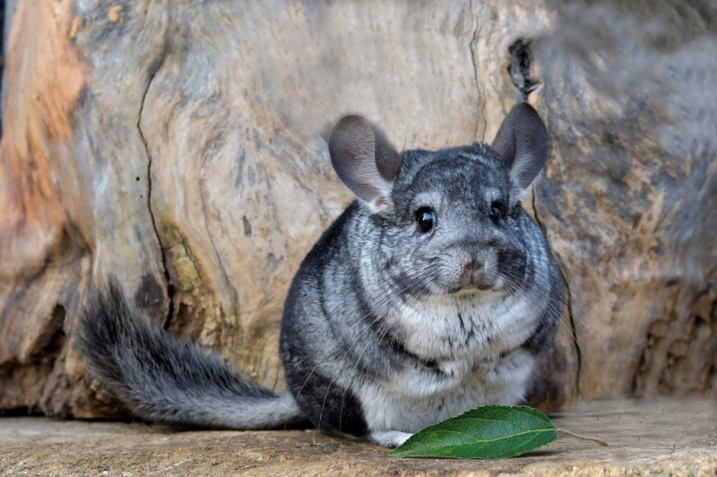

Собаки

Джек
Акита-ину — крупная порода собак, выведенная в Японии, в префектуре Акита на севере острова Хонсю.
Ему 5 лет. Он ласковый и ручной
.webp)
Сем
Йоркширский терьер (йорк, йорк) — комнатно-декоративная порода собак, выведенная в конце XIX века в графстве Йоркшир (Англия).
Ему 7 лет. Он ласковый и ручной
Кошки
.webp)
Лана
Сиамская кошка — одна из древнейших пород, относящаяся к ориентальной группе. Она известна элегантным телосложением, характерным окрасом и общительным характером.
Ей 3 года. Он ласковый и ручной

Сем
Мейн-кун — крупная порода кошек, сформировавшаяся в штате Мэн (США) в суровых климатических условиях. Название происходит от названия штата и английского слова raccoon («енот»). Это одна из старейших американских пород, которая сегодня популярна во всём мире.
Ему 6 лет. Он ласковый и ручной
Грызуны

Лин
Шиншиллы — род южноамериканских грызунов, принадлежащих к семейству шиншилловых. Они известны своим густым и плотным мехом, который считается одним из самых плотных среди наземных млекопитающих.
Ему 5 месяцев. Он ласковый и ручной

Ричи
Морские свинки — это небольшие одомашненные грызуны из рода свинок семейства свинковых. Несмотря на название, они не связаны с семейством свиней и не являются морскими животными.
Ему 7 месяцев. Он ласковый и ручной